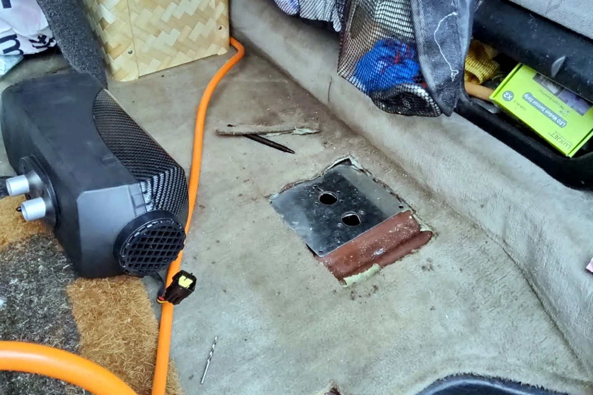

Crazy: I fill up three fuels — gasoline, gas, and diesel

Petrol or diesel? For me, the answer eventually was: gasoline, gas and Diesel. The red one was running on gasoline and autogas. When a diesel heater was added, I suddenly needed three different fuels for a single vehicle.
Two fuels for driving
The gas system gave me the choice between gasoline and LPG while driving. However, this also meant not only paying attention to the fuel level while on the road. Where is autogas available? Does the connection fit? Will it make it to the nearest gas station? Over time, it became routine, but at first it felt like I was planning for two cars.
The third fuel kept it warm
The diesel was not intended for the engine, but for heating. In winter or on cold, damp days, warmth in a camper is no luxury. It makes the difference between sleeping comfortably and freezing for hours. That's exactly why I accepted the extra fuel and supply expenses.
In the photo, you can see the construction site inside: heating, plumbing, and the prepared ground passage. That is the unvarnished side of an expansion. Before it gets warm and cozy, tools, cables, and parts are scattered everywhere.
What three fuels mean in everyday life
- Before longer stages, I check not just one, but several fill levels.
- Each fuel requires its clearly assigned filling and storage location.
- The heater is operated only as specified by the manufacturer.
- Combustion air, exhaust gas flow, and ventilation must never be improvised.
Still, it was crazy: I was standing at the gas station thinking about gasoline, gas, and diesel. But along the way, each of them had its purpose. Gasoline and gas moved the red forward, the diesel kept my little home warm. Vanlife is sometimes not minimalist — but surprisingly technical.
See you soon and always have a good trip,
your Tussy 💛